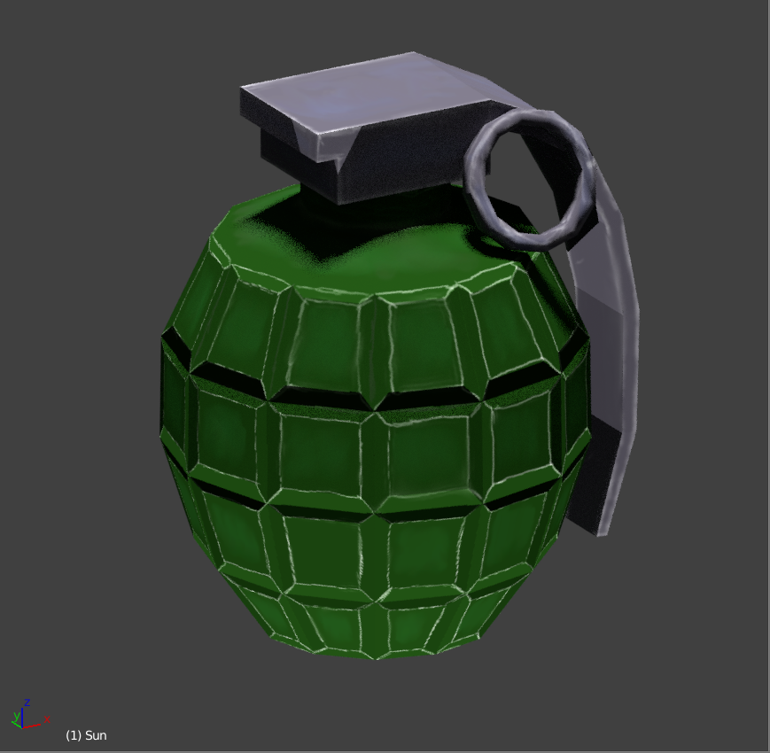

This week was mainly polishing and multiplayer debugging
Daoyi - Assets & Multiplayer
Add distinct visual effects, add assets for a nearly-complete multiplayer-player loop. With Stephen we fix a crucial bug in network code base that cause random player timeout. I also work on getting logs for Quest validation error, which has been sent to Quest Staff earlier this week. Next week I will polish the gameplay part of multiplayer match based on the data we get from player tests, more player goals and visual feedbacks.
Also added cartoony letters to give the player a better visual feedback when events occur.
Stephen - Network and Ball physics
Work with Daoyi to determine the changes that need to be made to the code base to ensure a singular working game across the Rift and the Quest. The major focus of this portion is how we are going to get the ball physics calculations to handled across the machines in a P2P manner while respecting the latency that we will inevitably face with the non-corded Quest. Once these bugs are handled I will work with Terrell to make sure we have smooth transitions between scenes and put the finishing touches on the gameplay mechanics.
Terrell - Lightning ball
After improving the jitter ball, I realized that we could make its trail look more interesting if it was jagged instead of smooth. Doing this was fairly simple using the logic of the jitter ball. All of the balls so far work by constantly recalculating their direction as they fly through the air, but for the lightning effect I added a really short delays between each recalculation.
Terrell - Target practice
I’ve made some changes to the targets in our target practice game mode. In order to make the scene a little more dynamic, the spherical targets move between preset positions. It’s not too extreme, but the notable thing about this movement is that it makes the targets a little easier to hit by moving the flying targets onto the ground periodically and the grounded targets closer. Additionally, the targets grow slowly over time to make it easier to complete the game, but I will definitely want to look at other ways to address difficulty in this gamemode. One way may be to have a homing ball that curves itself towards nearby targets, but implementing that in a way that feels good could take some time. However, if that solution works, we could change the overall format of the target practice mode to use smaller and more dynamic targets without having to worry as much about difficulty.
Andrew - Assets
This week I kept working on polishing some assets. I added a new texture and normal map to the grenade to make it look more stylistically similar. I also worked on making a higher detailed version of the glove for players to use when we have it on their hand. I will finish up the texturing for the glove later this weekend.
Andrew - Audio
I also worked on collecting and editing audio that will make the game more immersive. The first thing I added was an ambient crowd audio system that has a base white-noise track, and will intermittently cycle through various beloved baseball cheers.
I also began collecting audio for the sound effects like the bat hit, and fireworks for homeruns. Those will be integrated in the project this weekend.
For next week, I really want to focus on the aesthetics of the locker room scene to create a very enjoyable and immersive environment for people when they enter the experience